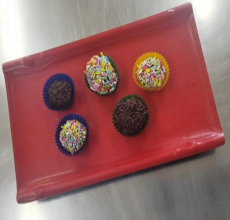

← Volver al módulo 3

Trufas de Chocolate
Trufas caseras elaboradas con chocolate semi amargo, crema de leche y manjar, ideales para decoración y presentación individual.
Ingredientes
- 1 ½ taza de chocolate semi amargo
- 1 cucharada de mantequilla Pil sin sal
- ½ taza de crema de leche
- ½ taza de manjar
Decoración
- Grajeas de chocolate c/n
- Grajeas de colores c/n
- Nueces picadas c/n
- Cocoa c/n
- Pirotines c/n
- Film plástico
Opcional
- Esencia de frutas
- Ralladura de limón
Preparación
Realizar el mise en place.
Picar el chocolate y llevarlo a baño maría.
En un bol, calentar la crema de leche, agregar la mantequilla y luego el chocolate derretido.
-
Incorporar el manjar y opcionalmente esencia o ralladura de frutas. Mezclar hasta integrar completamente.
-
Cubrir con papel film haciendo contacto directo con la mezcla y llevar a refrigeración por 2 horas.
-
Pesar porciones de 10 g, formar bolitas y pasarlas por grajeas, nueces, cocoa u otra decoración.
Colocar en pirotines y emplatar.